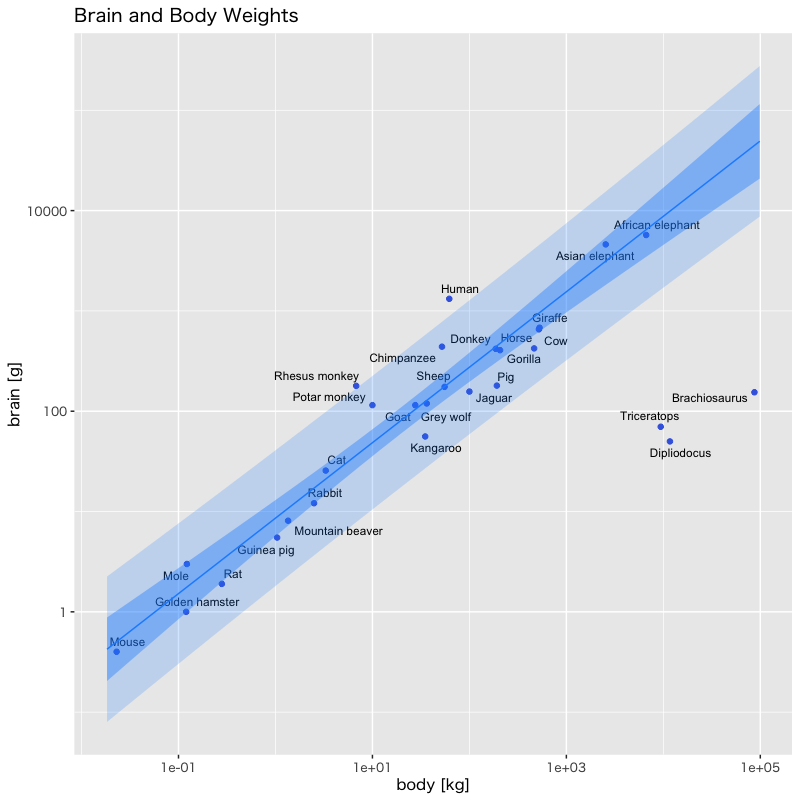

第13講 - 変数間の関係を推測する
村田 昇

Figure 1: 脳の重さと体重の関係
\(Y\) を \(X\) で説明する関係式として一次関数を考える
\begin{equation} Y=\alpha+\beta X\quad\text{(線形回帰モデル)} \end{equation}
\(n\) 個の説明変数と目的変数の組 \((X,Y)\) を観測
\begin{equation} (X_1,Y_1),(X_2,Y_2),\dotsc,(X_n,Y_n) \end{equation}
回帰モデル : データには観測誤差が含まれる
\begin{equation} Y_i=\alpha+\beta X_i+\epsilon_i,\quad i=1,\dotsc,n. \end{equation}
係数 \(\alpha,\beta\) の回帰式で説明できない 目的変数の変動
\begin{equation} e_i(\alpha,\beta)=Y_i-(\alpha+\beta X_i)\quad (i=1,\dotsc,n) \end{equation}
方針
回帰モデルの当てはまりがよい
\(\Leftrightarrow\) \(e_1(\alpha,\beta),\dotsc,e_n(\alpha,\beta)\) の絶対値が小さい
評価基準
\(e_1(\alpha,\beta),\dotsc,e_n(\alpha,\beta)\) の平方和 (残差平方和) を最小にするように \(\alpha,\beta\) を決定
\begin{equation} S(\alpha,\beta) =\sum_{i=1}^ne_i(\alpha,\beta)^2 =\sum_{i=1}^n\{Y_i-(\alpha+\beta X_i)\}^2 \end{equation}
最小二乗推定量
\(S(\alpha,\beta)\) を最小にするパラメータの組 \((\hat{\alpha},\hat{\beta})\)
最小二乗推定量の解
\begin{equation} \hat{\beta} =\frac{\sum_{i=1}^n(X_i-\bar{X})(Y_i-\bar{Y})}{\sum_{i=1}^n(X_i-\bar{X})^2}, \quad \hat{\alpha}=\bar{Y}-\hat{\beta}\bar{X} \end{equation}ただし
\begin{equation} \bar{X}=\frac{1}{n}\sum_{i=1}^nX_i,\quad \bar{Y}=\frac{1}{n}\sum_{i=1}^nY_i. \end{equation}
関数 stats::lm() : 線形モデルを当てはめる
lm(formula, data, subset, na.action, ...)
#' formula: 式 (目的変数 ~ 説明変数)
#' data: データフレーム
#' subset: 対象とする部分データ
#' na.action: 欠損値の扱い
#' ...: 他のオプション．詳細は '?stats::lm' を参照
点推定の平均と分散
\begin{align} &\mathbb{E}[\hat{\alpha}]=\alpha, &&\mathbb{E}[\hat{\beta}]=\beta,\\ &\mathrm{Var}(\hat{\alpha})=\frac{\sigma^2\sum_{i=1}^{n}X_i^2}{n\sum_{i=1}^{n}(X_i-\bar{X})^2}, &&\mathrm{Var}(\hat{\beta})=\frac{\sigma^2}{\sum_{i=1}^{n}(X_i-\bar{X})^2} \end{align}
誤差と回帰式の関係
\begin{equation} \epsilon_i=Y_i-(\alpha+\beta X_i) \quad(i=1,\dotsc,n) \end{equation}
\(\sigma^2\) の自然な推定量(良いとは限らない)
\begin{equation} \hat{\sigma}^2 =\frac{1}{n}\sum_{i=1}^n\hat{\epsilon}_i^2 \quad\text{ただし}\quad\hat{\epsilon}_i =Y_i-(\hat{\alpha}+\hat{\beta}X_i),\quad(i=1,\dotsc,n) \end{equation}
残差 \(\hat{\epsilon}_1,\dotsc,\hat{\epsilon}_n\) の性質 (資料; 正規方程式)
\begin{equation} \sum\hat{\epsilon}_i=0,\quad \sum\hat{\epsilon}_iX_i=0. \end{equation}
残差の二乗平均の性質 (標本分散と同様の計算)
\begin{equation} \mathbb{E}\Bigl[\frac{1}{n}\sum_{i=1}^{n}\hat{\epsilon}_i^2\Bigr] =\frac{n{-}2}{n}\sigma^2 % \mathbb{E}[\hat{\epsilon}_i^2]=\frac{n{-}2}{n}\sigma^2\quad(i=1,\dotsc,n) \end{equation}
\(\sigma^{2}\) の不偏推定量
\begin{equation} \hat{\sigma}^2=\frac{1}{n{-}2}\sum_{i=1}^n\hat{\epsilon}_i^2. \end{equation}
\(\hat{\alpha},\hat{\beta}\) の分散の推定量 (資料; Gauss-Markovの定理)
\begin{equation} \mathrm{s.e.}(\hat{\alpha})^2 =\frac{\hat{\sigma}^2\sum_iX_i^2}{n\sum_i(X_i-\bar{X})^2}, \quad \mathrm{s.e.}(\hat{\beta})^2 =\frac{\hat{\sigma}^2}{\sum_i(X_i-\bar{X})^2} \end{equation}
以下は \(\hat{\beta}\) と独立で自由度 \(n{-}2\) の \(\chi^2\) 分布に従う
\begin{equation} \frac{(n{-}2)\mathrm{s.e.}(\hat{\beta})^2}{\mathrm{Var}(\hat{\beta})} \end{equation}
以下の確率変数は自由度 \(n{-}2\) の \(t\) 分布に従う
\begin{equation} \frac{\hat{\beta}-\beta}{\mathrm{s.e.}(\hat{\beta})} = \frac{(\hat{\beta}-\beta)/\sqrt{\mathrm{Var}(\hat{\beta})}}{\sqrt{(n{-}2)\mathrm{s.e.}(\hat{\beta})^{2}/(n{-}2)\mathrm{Var}(\hat{\beta})}} \end{equation}
\(\gamma\in(0,1)\) に対する \(\beta\) の \(1-\gamma\) 信頼区間
\begin{equation} \left[ \hat{\beta}-t_{1{-}\gamma/2}(n{-}2)\cdot \mathrm{s.e.}(\hat{\beta}),\; \hat{\beta}+t_{1{-}\gamma/2}(n{-}2)\cdot \mathrm{s.e.}(\hat{\beta}) \right] \end{equation}
関数 confint() : 係数の信頼区間を求める
confint(object, parm, level = 0.95, ...)
#' object: 関数 lm で推定したモデル
#' parm: 区間推定をするパラメタ．指定しなければ全て
#' level: 信頼係数
#' ...: 他のオプション．詳細は '?confint' を参照
関数 predict() : 予測値の信頼区間を求める
predict(object, newdata, se.fit = FALSE, scale = NULL, df = Inf,
interval = c("none", "confidence", "prediction"),
level = 0.95, type = c("response", "terms"),
terms = NULL, na.action = na.pass,
pred.var = res.var/weights, weights = 1,
rankdeficient = c("warnif", "simple", "non-estim", "NA", "NAwarn"),
tol = 1e-6, verbose = FALSE,
...)
#' object: 関数 lm で推定したモデル
#' newdata: 予測値を計算する説明変数
#' interval: 何も付けない(none)・信頼区間(confidence)・予測区間(prediction)
#' level: 信頼係数 (既定値は0.95)
#' ...: 他のオプション．詳細は '?predict.lm' を参照
関数 broom::augment() によるデータの情報 (tidyverse)
augment(
x,
data = model.frame(x),
newdata = NULL,
se_fit = FALSE,
interval = c("none", "confidence", "prediction"),
conf.level = 0.95,
...
)
#' x: 関数 lm で推定したモデル
#' newdata: data と異なる説明変数であてはめ・予測を行う
#' se_fit: 標準誤差を付けるか否か
#' interval: 信頼区間(confidence)・予測区間(prediction)を付ける
#' 詳細は '?broom::augment.lm' を参照
説明変数 \(X\) が目的変数 \(Y\) を説明・予測するのに本当に役立っているかを検証
\begin{equation} H_0:\beta=0\qquad\text{vs}\qquad H_1:\beta\neq0 \end{equation}
\(\beta\) の 有意性の検定
帰無仮説 \(H_0\) が有意水準 \(\gamma\) で棄却されるとき， \(\beta\) は有意水準 \(\gamma\) で 有意である
帰無仮説 \(H_0\) が正しければ以下の統計量 は自由度 \(n{-}2\) の \(t\) 分布に従う
\begin{equation} t=\frac{\hat{\beta}}{\mathrm{s.e.}(\hat{\beta})} \end{equation}
棄却域による検定
有意水準を \(\gamma\in(0,1)\) とし， \(\hat{\beta}\) の \(t\) 値 が以下の場合には帰無仮説を棄却
\begin{equation} |t| > t_{1-\gamma/2}(n{-}2) \end{equation}
\(p\) 値による検定
以下で定義される \(\hat{\beta}\) の \(p\) 値 が \(\gamma\) 未満の場合に帰無仮説を棄却
\begin{equation} \text{(\(p\) 値)}=2\int_{|t|}^\infty f(x)dx \end{equation}
関数 stats::summary() : 情報の要約 (base R)
summary(object)
#' object: 関数 lm() で推定したモデル
#' 関数の出力 (リスト名 $"名前" で参照可能)
#' coefficients : 係数とt統計量
#' fstatistics : F統計量 (モデルの評価)
#' 詳細は '?summary.lm' を参照
関数 broom::tidy() : 回帰係数の情報 (tidyverse)
tidy(x, conf.int = FALSE, conf.level = 0.95, exponentiate = FALSE, ...)
#' x: 関数 lm() で推定したモデル
#' conf.int: 信頼区間を付けるか否か
#' conf.level: 信頼係数
#' 詳細は '?broom::tidy.lm' を参照
関数 broom::glance() : モデルの統計情報 (tidyverse)
glance(x, ...)
#' x: 関数 lm() で推定したモデル
#' F統計量は statistic/p.value の列
#' 詳細は '?broom::glance.lm' を参照
決定係数 (あるいは 寄与率)
\begin{equation} R^{2}= \frac{\sum_{i=1}^{n}(\hat{Y}_{i}-\bar{Y})^{2}}{\sum_{i=1}^{n}(Y_{i}-\bar{Y})^{2}} \end{equation}
\(\hat{Y}_{i}\) は あてはめ値 または 予測値 と呼ばれる
\begin{equation} \hat{Y}_{i}= \hat{\alpha}+\hat{\beta}X_{i}\quad(i=1,\dotsc,n). \end{equation}
以下の等式が成立
\begin{align} &\hat{\epsilon}_i =Y_i-\hat{Y}_i\quad (i=1,\dotsc,n)\\ &\sum_{i=1}^{n}\hat{\epsilon}_i=0,\\ &\frac{1}{n}\sum_{i=1}^nY_i=\bar{Y},\\ &\frac{1}{n}\sum_{i=1}^n\hat{Y}_i=\bar{Y}. \end{align}
決定係数
\begin{equation} R^{2}= \frac{\sum_{i=1}^{n}(\hat{Y}_{i}-\bar{Y})^{2}}{\sum_{i=1}^{n}(Y_{i}-\bar{Y})^{2}} \end{equation}
目的変数の観測データとあてはめ値の相関の二乗
\begin{equation} R^{2}= \left\{ \frac{\sum_{i=1}^{n}(\hat{Y}_{i}-\bar{Y})(Y_{i}-\bar{Y})} {\sqrt{\sum_{i=1}^{n}(\hat{Y}_{i}-\bar{Y})^{2}} \cdot \sqrt{\sum_{i=1}^{n}(Y_{i}-\bar{Y})^{2}}} \right\}^{2} \end{equation}
説明変数と目的変数の観測データの間の相関の二乗
\begin{equation} R^{2}= \left\{ \frac{\sum_{i=1}^{n}(X_{i}-\bar{X})(Y_{i}-\bar{Y})} {\sqrt{\sum_{i=1}^{n}(X_{i}-\bar{X})^{2}} \cdot \sqrt{\sum_{i=1}^{n}(Y_{i}-\bar{Y})^{2}}} \right\}^{2} \end{equation}
残差 \(\epsilon_i\) と目的変数 \(Y_i\) の標本分散による表現
\begin{equation} R^{2} =1-\frac{\frac{1}{n}\sum_{i=1}^{n}\hat{\epsilon}_{i}^{2}}{\frac{1}{n}\sum_{i=1}^{n}(Y_{i}-\bar{Y})^{2}}. \end{equation}
不偏推定量で代替 : 自由度調整済み決定係数 (または寄与率)
\begin{equation} \bar{R}^{2} =1-\frac{\frac{1}{n{-}2}\sum_{i=1}^{n}\hat{\epsilon}_{i}^{2}}{\frac{1}{n-1}\sum_{i=1}^{n}(Y_{i}-\bar{Y})^{2}}. \end{equation}
関数 stats::summary() : 情報の要約 (base R)
summary(object)
#' object: 関数 lm() で推定したモデル
#' 関数の出力 (リスト名 $"名前" で参照可能)
#' r.squareds : 決定係数
#' adj.r.squareds : 自由度調整済み決定係数
#' 詳細は '?summary.lm' を参照
関数 broom::tidy() : 回帰係数の情報 (tidyverse)
tidy(x, conf.int = FALSE, conf.level = 0.95, exponentiate = FALSE, ...)
#' x: 関数 lm() で推定したモデル
#' conf.int: 信頼区間を付けるか否か
#' conf.level: 信頼係数
#' 詳細は '?broom::tidy.lm' を参照
関数 broom::glance() : モデルの統計情報 (tidyverse)
glance(x, ...)
#' x: 関数 lm() で推定したモデル
#' F統計量は statistic/p.value の列
#' 詳細は '?broom::glance.lm' を参照
Created by Noboru Murata | Licensed under CC BY-NC 4.0